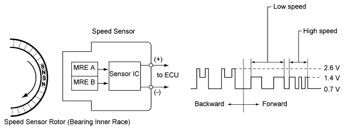
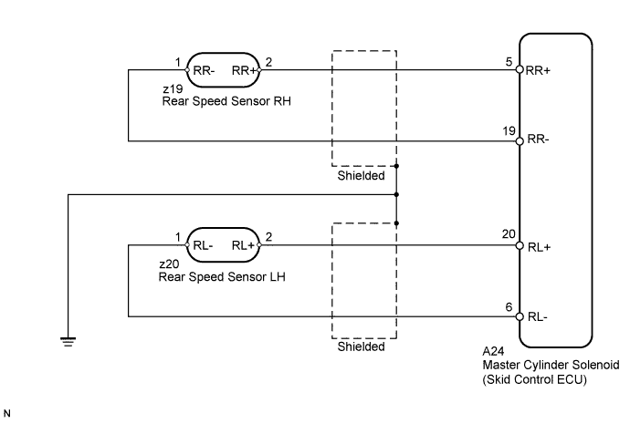
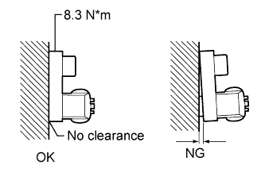
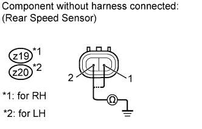
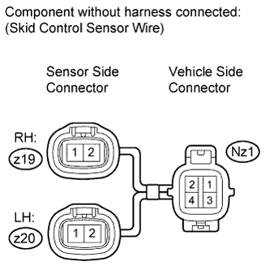
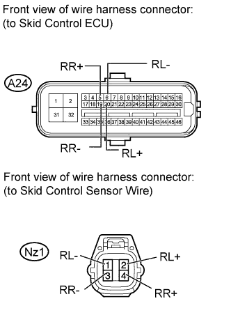
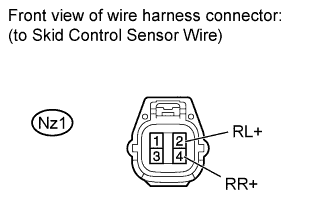

DTC C0210/33 Rear Speed Sensor RH Circuit |
DTC C0215/34 Rear Speed Sensor LH Circuit |
DTC C1238/38 Foreign Object is Attached on Tip of Rear Speed Sensor RH |
DTC C1239/39 Foreign Object is Attached on Tip of Rear Speed Sensor LH |

| DTC Code | DTC Detection Condition | Trouble Area |
| C0210/33 C0215/34 | When any of the following conditions is detected: 1. At a vehicle speed of 10 km/h (6 mph) or more, the pulses are not input for 1 second. 2. A momentary interruption of the speed sensor signal occurs at least 255 times when switching the engine switch on (IG) and off. 3. Continuous noise occurs in the speed sensor signals at a vehicle speed of 20 km/h (12 mph) or more. 4. The speed sensor signal circuit is open for 0.12 seconds or more. |
|
| C1238/38 C1239/39 | Noise in the speed sensor signals occurs 75 times or more for 5 seconds when the vehicle speed is 20 km/h (12 mph) or more. |
|

| 1.READ VALUE USING INTELLIGENT TESTER (RR/RL SPEED OPEN) |
Connect the intelligent tester to the DLC3.
Turn the engine switch on (IG) and turn the intelligent tester on.
Enter the following menus: Chassis / ABS/VSC/TRC / Data List.
| Tester Display | Measurement Item/Range | Normal Condition | Diagnostic Note |
| RR Speed Open | Rear speed sensor RH open detection/ERROR or NORMAL | ERROR: Momentary interruption NORMAL: Normal | - |
| RL Speed Open | Rear speed sensor LH open detection/ERROR or NORMAL | ERROR: Momentary interruption NORMAL: Normal | - |
Check for any momentary interruption in the wire harness and connector corresponding to the DTC (Click here).
|
| ||||
| OK | |
| 2.READ VALUE USING INTELLIGENT TESTER (RR/RL WHEEL SPEED, RR/RL WHEEL DIRECTION) |
Check that there is no difference between the speed value output from the speed sensor displayed on the intelligent tester and the speed value displayed on the speedometer when driving the vehicle.
| Tester Display | Measurement Item/Range | Normal Condition | Diagnostic Note |
| RR Wheel Speed | Rear wheel speed sensor RH reading/min.: 0 km/h (0 mph), max.: 326 km/h (202 mph) | Actual wheel speed | A similar speed is indicated on the speedometer. |
| RL Wheel Speed | Rear wheel speed sensor LH reading/min.: 0 km/h (0 mph), max.: 326 km/h (202 mph) | Actual wheel speed | A similar speed is indicated on the speedometer. |
Check that the sensor signal conforms to the wheel direction.
| Tester Display | Measurement Item/Range | Normal Condition | Diagnostic Note |
| RR Wheel Direction | Rear wheel direction RH / FORWARD or BACK | FORWARD: Forward BACK: Back | - |
| RL Wheel Direction | Rear wheel direction LH / FORWARD or BACK | FORWARD: Forward BACK: Back | - |
|
| ||||
| OK | |
| 3.PERFORM SIGNAL CHECK |
Check if test mode (signal check) DTCs are output.
| Result | Proceed to |
| Test mode (signal check) DTC is output | A |
| Test mode (signal check) DTC is not output | B |
|
| ||||
| A | |
| 4.INSPECT REAR SPEED SENSOR INSTALLATION |
 |
Check the speed sensor installation.
|
| ||||
| OK | |
| 5.INSPECT SPEED SENSOR TIP |
Remove the rear speed sensor (Click here).
Check the sensor tip.
|
| ||||
| OK | |
| 6.INSPECT REAR SPEED SENSOR |
 |
Install the rear speed sensor.
Disconnect the z19 and/or z20 rear speed sensor connector.
Measure the resistance according to the value(s) in the table below.
| Tester Connection | Switch Condition | Specified Condition |
| z19-2 (RR+) - Body ground | Engine switch off | 10 kΩ or higher |
| z19-1 (RR-) - Body ground | Engine switch off | 10 kΩ or higher |
| Tester Connection | Switch Condition | Specified Condition |
| z20-2 (RL+) - Body ground | Engine switch off | 10 kΩ or higher |
| z20-1 (RL-) - Body ground | Engine switch off | 10 kΩ or higher |
|
| ||||
| OK | |
| 7.INSPECT SKID CONTROL SENSOR WIRE |
 |
Disconnect the z19/z20 and Nz1 skid control sensor wire connectors.
Measure the resistance according to the value(s) in the table below.
| Tester Connection | Condition | Specified Condition |
| z19-2 - Nz1-4 | Always | Below 1 Ω |
| z19-2 - Nz1-3 | Always | 10 kΩ or higher |
| z19-2 - Body ground | Always | 10 kΩ or higher |
| z19-1 - Nz1-3 | Always | Below 1 Ω |
| z19-1 - Nz1-4 | Always | 10 kΩ or higher |
| z19-1 - Body ground | Always | 10 kΩ or higher |
| Tester Connection | Condition | Specified Condition |
| z20-2 - Nz1-2 | Always | Below 1 Ω |
| z20-2 - Nz1-1 | Always | 10 kΩ or higher |
| z20-2 - Body ground | Always | 10 kΩ or higher |
| z20-1 - Nz1-1 | Always | Below 1 Ω |
| z20-1 - Nz1-2 | Always | 10 kΩ or higher |
| z20-1 - Body ground | Always | 10 kΩ or higher |
|
| ||||
| OK | |
| 8.CHECK HARNESS AND CONNECTOR (SKID CONTROL ECU - SKID CONTROL SENSOR WIRE) |
 |
Disconnect the A24 skid control ECU connector and Nz1 skid control sensor connector.
Measure the resistance according to the value(s) in the table below.
| Tester Connection | Condition | Specified Condition |
| A24-5 (RR+) - Nz1-4 (RR+) | Always | Below 1 Ω |
| A24-5 (RR+) - Body ground | Always | 10 kΩ or higher |
| A24-19 (RR-) - Nz1-3 (RR-) | Always | Below 1 Ω |
| A24-19 (RR-) - Body ground | Always | 10 kΩ or higher |
| Tester Connection | Condition | Specified Condition |
| A24-20 (RL+) - Nz1-2 (RL+) | Always | Below 1 Ω |
| A24-20 (RL+) - Body ground | Always | 10 kΩ or higher |
| A24-6 (RL-) - Nz1-1 (RL-) | Always | Below 1 Ω |
| A24-6 (RL-) - Body ground | Always | 10 kΩ or higher |
|
| ||||
| OK | |
| 9.INSPECT MASTER CYLINDER SOLENOID (SKID CONTROL ECU OUTPUT VOLTAGE) |
 |
Reconnect the A24 skid control ECU connector.
Measure the voltage according to the value(s) in the table below.
| Tester Connection | Switch Condition | Specified Condition |
| Nz1-4 (RR+) - Body ground | Engine switch on (IG) | 7.5 to 12 V |
| Tester Connection | Switch Condition | Specified Condition |
| Nz1-2 (RL+) - Body ground | Engine switch on (IG) | 7.5 to 12 V |
| Result | Proceed to | |
| OK | A | |
| NG | LHD | B |
| RHD | C | |
|
| ||||
|
| ||||
| A | |
| 10.RECONFIRM DTC |
Clear the DTCs (Click here).
Drive the vehicle at a speed of approximately 32 km/h (20 mph) or more for 60 seconds or more.
Check if the same DTCs are output (Click here).
| Result | Proceed to |
| DTC is output | A |
| DTC is not output (When troubleshooting in accordance with the Diagnostic Trouble Code Chart) | B |
| DTC is not output (When troubleshooting in accordance with the Problem Symptoms Table) | C |
|
| ||||
|
| ||||
| A | |
| 11.REPLACE REAR SPEED SENSOR |
Replace the rear speed sensor (Click here).
| NEXT | |
| 12.RECONFIRM DTC |
Clear the DTCs (Click here).
Drive the vehicle at a speed of approximately 32 km/h (20 mph) or more for 60 seconds or more.
Check if the same DTCs are output (Click here).
| Result | Proceed to |
| DTC is output | A |
| DTC is not output | B |
|
| ||||
| A | |
| 13.INSPECT SPEED SENSOR ROTOR |
Remove the rear axle hub and bearing assembly (Click here).
Check the sensor rotor.
| Result | Proceed to | |
| NG | A | |
| OK | LHD | B |
| RHD | C | |
|
| ||||
|
| ||||
| A | ||
| ||